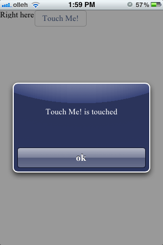

모바일 환경에서 화면을 개발할 때 일반적으로 UI Framework에서 제공하는 개별 UI 컴포넌트를 활용하여 화면을 디자인 합니다. 이는 비교적 간단한 화면을 재미삼아 개발할 경우 쉽게 접근할 수 있지만 앱의 규모가 커지고 복잡도가 증가 할수록 앱 개발의 생산성을 저하시키고 향후 유지보수에도 커다란 문제점을 야기시킵니다. Mobello는 앱의 구조가 복잡해지더라도 이를 쉽게 수용할 수 있도록 명확한 MVC(Model-View-Controller)구조를 제시하고 있습니다. 이번 포스팅에서는 Mobello에서 제시하는 MVC구조 중 Controller에 해당하는 SceneController에 대해 설명합니다.
목차:
Mobello에서 SceneController는 크게 두가지의 역할을 수행합니다.
Mobello에서 화면을 개발할 때 일반적으로 화면별로 하나의 SceneController 클래스를 생성합니다. 즉, 하나의 Scene(화면)은 하나의 SceneController와 매핑됩니다. 이때 작성하는 SceneController클래스는 tau.ui.SceneController 클래스를 상속받으며 다음의 코드와 같은 형태를 가집니다.
$class('sample.CustomController').extend(tau.ui.SceneController).define({
/**
* Initial callback method from Mobello Runtime
*/
init: function () {
// initialize initial variables
},
/**
* After initialization, this callback method is invoked.
* In this method you can create User Interface
*/
loadScene: function () {
// create UI using various UI Components
},
/**
* This method is invoked by Runtime after loading Scene
* but before drawing on the screen.
*/
sceneLoaded: function () {
// after scene is loading you can adjust existing UI in dynamic manner
},
/**
* This method is invoked by Runtime after Scene is drawn on the screen
*/
sceneDrawn: function () {
// you can implement logic like handling post processing
},
/**
* This method is invoked when current controller is no longer existing
*/
destroy: function () {
// you can clean up instance variables
}
});
위의 메소들 중 Scene을 생성하기 위해 반드시 구현해야 할 메소드는 loadScene() 메소드이며 그 이외의 메소드들은 필요에 따라 선택적으로 구현하면 됩니다.
앞에서 설명한 것처럼 Mobello에서 Scene을 생성할 수 있는 방법은 크게 2가지 입니다. 하나는 loadScene()메소드를 통해 생성하는 방법이며, 다른 하나는 CS(Compiled Scene)파일 로딩을 이용한 방법입니다.
SceneController의 Lifecycle에 의해 loadScene()메소드가 호출될 때 이 메소드 안에서 다양한 컴포넌트를 활용해서 화면(Scene)을 생성합니다. SceneController는 기본적을 현재의 Scene을 가져올 수 있도록 getScene() 메소드를 제공합니다. 다음의 코드처럼 생성한 컴포넌트의 인스턴스를 Scene 객체에 추가함으로써 화면을 구성할 수 있습니다.
...
loadScene: function () {
var scene = this.getScene(),
label = new tau.ui.Label({text: 'Right here'}),
button = new tau.ui.Button({label: 'Touch Me!'});
// button.setLabel('Touch Me!'); // you can set label in this way
scene.add(label);
scene.add(button);
},
...
CS파일을 이용하면 보다 쉽게 Scene을 로딩할 수 있으며, 한번 개발한 화면을 쉽게 재사용할 수 있도록 해줍니다. Mobello 스튜디오의 디자인 에디터를 활용해서 Scene을 디자인 하면 CS파일이 자동으로 생성되며 이때 생성되는 CS파일과 Controller클래스의 Naming Convention은 다음과 같습니다.
|
위의 Naming Convention으로 파일을 생성하면 SceneController는 자동으로 SceneController가 있는 폴더에서 해당 CS파일을 로딩하여 화면을 구성합니다. 따라서 위에서 처럼 SceneController의 loadScene() 메소드를 이용하여 직접 화면을 구성하지 않고도 쉽게 화면을 생성할 수 있습니다.
만약 Naming Convention을 따르지 않거나 해당 CS파일이 현재 Controller클래스의 위치와 다른 폴더에 위치할 경우 로딩할 CS파일을 직접 지정하여 로딩할 수도 있습니다. 다음과 같이 SceneController 객체 생성시 파라미터로 로딩할 CS파일의 이름을 지정하면 해당 파일을 찾아 Scene을 로딩합니다.
var controller = new sample.CustomController({scene: '/foo/custom.scene.js'}); // loads CS file(custom.scene.js) from the 'foo' directory
Scene파일의 경로는 절대경로로 기술하며 현재 앱 폴더가 최상위 경로가 됩니다.
생성된 화면이 사용자의 단말에 출력된 이후 사용자로 부터 입력을 받습니다. 특정 컴포넌트에 사용자의 입력이 발생할 경우 해당 컴포넌트는 그에 상응하는 이벤트를 발생시킵니다. 이때 발생되는 이벤트의 적절한 처리로직을 SceneController에서 구현합니다. 다음은 위의 예제 코드에서 사용자가 버튼을 터치할 경우 발생되는 터치 이벤트의 처리방법을 보여줍니다.
...
loadScene: function () {
var scene = this.getScene(),
label = new tau.ui.Label({text: 'Right here'}),
button = new tau.ui.Button({label: 'Touch Me!'});
// button.setLabel('Touch Me!'); // you can set label in this way
button.onEvent(tau.rt.Event.TAP, this.handleTouch, this); // register event listener
scene.add(label);
scene.add(button);
},
handleTouch: function (e, payload) {
var btn = e.getSource();
tau.alert(btn.getLabel() + ' is touched');
},
...
특정 컴포넌트에 대한 이벤트 처리는 다음과 같이 구현합니다.
이벤트를 리스닝하고자 하는 컴포넌트에 다음과 같이 이벤트 리스너를 등록합니다.
button.onEvent(tau.rt.Event.TAP, this.handleTouch, this);
이때 사용되는 파라미터는 다음과 같습니다.
아래의 코드에서 처럼 이벤트 등록과정에서 명시한 이벤트 핸들러를 현재의 SceneController클래스에 정의합니다.
handleTouch: function (e, payload) {
var btn = e.getSource();
tau.alert(btn.getLabel() + ' is touched');
}
버튼 컴포넌트에서 터치 이벤트가 발생했을 때 위의 이벤트 핸들러 메소드가 실행됩니다. 이벤트 핸들러는 다음과 같이 두개의 파라미터를 받습니다.
위의 예제를 실행 후 화면에서 버튼을 터치하면 경고창을 통해 'Touch Me! is touched'라는 메시지가 출력됩니다.
